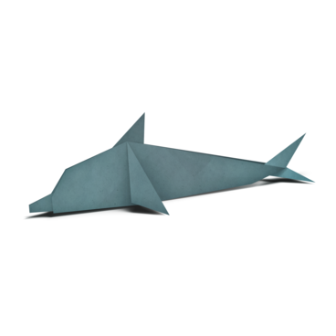
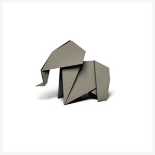

Origami Designs
Penguin

- Penguins are a group of aquatic flightless birds.
- Penguins live almost exclusively below the equator
- Highly adapted for life in the water, penguins have countershaded dark and white plumage and flippers for swimming.
Dolphin

- Dolphin is the common aquatic mammal
- Most dolphins are marine and live in the ocean or brackish waters along coastlines.
- Dolphins have smooth, rubbery skin and are usually colored in some mixture of black, white, and gray. They have two flippers, or fins, on their sides, as well as a triangular fin on the back.
Elephant

- Elephants are the largest existing land animals.Elephants are grayish to brown in colour, and their body hair is sparse and coarse.
- They are found most often in savannas, grasslands, and forests but occupy a wide range of habitats, including deserts, swamps, and highlands in tropical and subtropical regions of Africa and Asia.
- Elephants have its long trunk (elongated upper lip and nose), columnar legs, and huge head with temporal glands and wide, flat ears.
Giant Panda

- The giant panda, also known as the panda bear, is a bear native to South Central China.
- Penguins live almost exclusively below the equator
- It is characterised by its bold black-and-white coat and rotund body.
Turtle

- Turtles are reptiles of the order Chelonia or Testudines.
- Freshwater turtles live in ponds and lakes, and they climb out of the water onto logs or rocks to bask in the warm sun.
- They are characterized by a bony or cartilaginous shell, developed from their ribs, that acts as a shield.